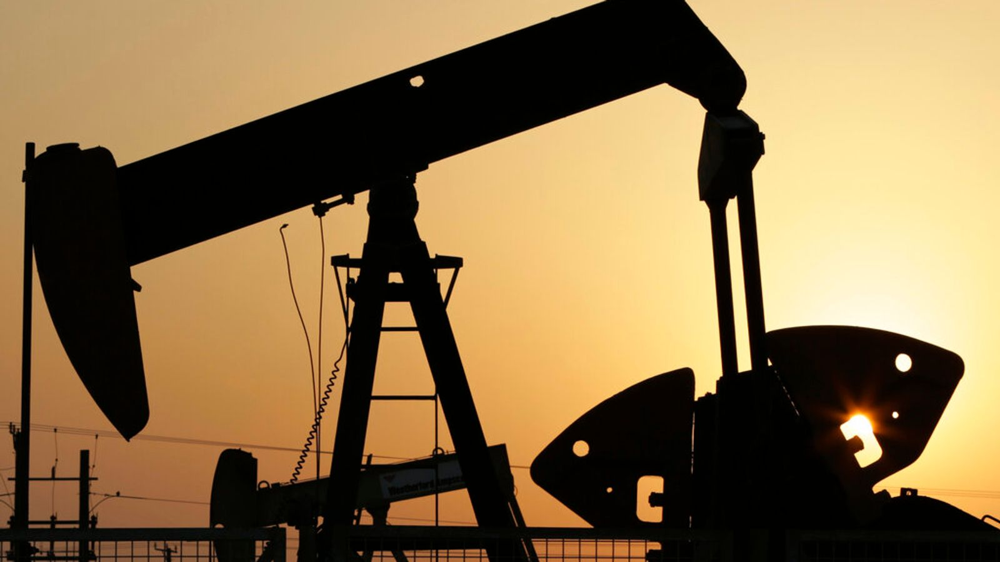

Biggest ever release of oil reserves to ease war supply disruption
A record release of strategic oil reserves has been agreed in a bid to help offset supply disruption since the Middle East conflict began. The International Energy Agency (IEA) said it would coordinate a flow of 400 million barrels into the market, with the UK government contributing 13.5 million barrels. The body has barrels at its disposal following talks with ministers from the G7 group of advanced industrialised nations, including the UK. Money blog: Sainsbury's worker wins £12,000 after boss's social media post The move, however, made little difference to oil prices. Brent crude, the international benchmark, has eased back from highs this week above $118 per barrel on news that the aid was being considered. It was trading at $92 a barrel shortly before the details were confirmed on Wednesday afternoon and dipped only to $90.63 after the announcement.
It's not clear when the emergency stocks will come on stream, with the IEA saying they will be made available to the market "over a timeframe that is appropriate to the national circumstances of each member country". Implementation details for the policy will be announced in due course, the IEA said. Why's it been announced? The Gulf region usually exports about 15 million barrels of oil and five million barrels of oil products per day but output and deliveries have been shattered by Iranian attacks on energy infrastructure since US-Israeli military strikes against the regime in Tehran began last month. It means that an end to the war is not necessarily a quick fix for oil prices, with deeper consequences ahead. More on those later.
The last kerosene shipments that passed through the Strait of Hormuz before its closure are due to arrive in Europe around 10 April, according to Benedict George, head of European products at Argus Media. "There's no realistic risk of actually running out" of jet fuel, George said, though he added that, "stocks could fall to a level where you have localised shortages". Ryanair group CEO Micheal O'Leary has warned of jet fuel supply disruption in May in an interview with Sky News. Speaking after a virtual meeting of EU countries' energy ministers to discuss their response, Energy Commissioner Dan Jorgensen suggested that measures brought in in 2022 after Russia's full-scale invasion of Ukraine could be revived.
The threat to shipping has effectively closed the narrow Strait of Hormuz, off the Iranian coast, which usually handles a fifth of the world's energy shipments and export volumes of crude and refined products are currently less than 10% of pre-conflict levels. How much do members hold? The 32 IEA members, of which the UK is one, hold emergency stockpiles of over 1.2 billion barrels, with a further 600 million barrels of industry stocks held. The announcement is the sixth coordinated stock release since the IEA was founded in 1974. Previous actions were taken during the Gulf War in 1991, due to Hurricane Katrina in 2005, intervention in Libya in 2011, and twice in 2022 after the invasion of Ukraine.